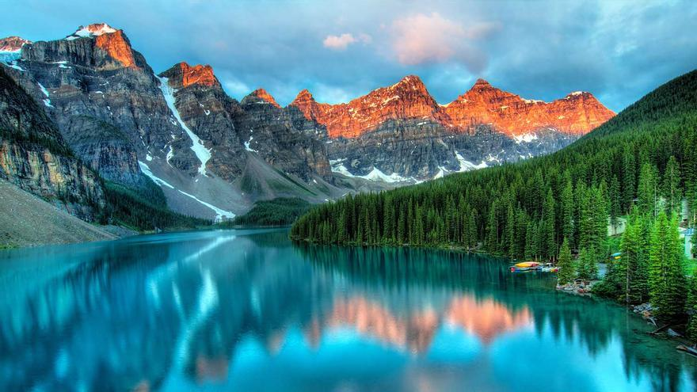

Montañas Rocosas, Canadá
Las Montañas Rocosas Canadienses: Un Paraíso Natural Las Montañas Rocosas canadienses son una cadena montañosa que se extiende por las provincias de Alberta y Columbia Británica. Conocidas por sus impresionantes picos nevados, lagos cristalinos, bosques exuberantes y una rica vida silvestre, las Rocosas son un destino popular para los amantes de la naturaleza y los aventureros.
¿Qué hace tan especiales a las Rocosas Canadienses?
- Paisajes espectaculares: Desde glaciares brillantes hasta valles verdes, las Rocosas ofrecen una variedad de paisajes que cambian constantemente a medida que te adentras en la cordillera.
- Actividades al aire libre: Las Rocosas ofrecen innumerables oportunidades para practicar senderismo, escalada, esquí, kayak, rafting y camping.
- Parques nacionales: La región cuenta con varios parques nacionales, como Banff y Jasper, que protegen esta maravilla natural y ofrecen una amplia gama de servicios para los visitantes.